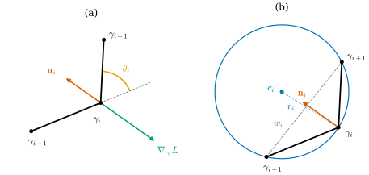
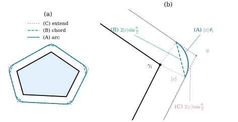
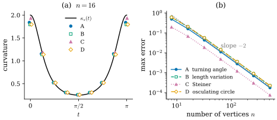

32.3 Four Discrete Curvatures
Goals
- discrete curve의 vertex에서 turning angle을 정의하고 계산할 수 있으며, 닫힌 discrete curve에서 그 합이 \(2\pi\)의 정수배임을 증명할 수 있다.
- Section 32.2의 (A)–(D)를 하나씩 discrete curve에 적용해 네 discrete curvature \(\kappa^A_i, \kappa^B_i, \kappa^C_i, \kappa^D_i\)를 얻고, 각 공식을 증명할 수 있다.
- integrated 값과 pointwise 값을 구분하고, 네 정의가 refinement에서 모두 \(\kappa_s\)로 수렴함을 설명할 수 있다.
- 각 정의가 smooth curvature의 어떤 성질을 정확히 보존하는지 비교해, 용도에 맞는 정의를 고를 수 있다.
Prerequisites
- Section 32.2: discrete curve Definition 32.2.8, discrete tangent와 normal Definition 32.2.11, 네 smooth 특징 Proposition 32.2.2–Proposition 32.2.5.
- signed angle \(\angle(u, v)\)와 그 성질: (5.6.2). 회전 \(R_\varphi\)와 \(J = R_{\pi/2}\): (4.4.1).
- 부등식 \(x - x^3/6 \le \sin x \lt x\) (\(x \gt 0\)): Proposition 32.1.1의 증명.
Motivation
Section 32.2는 discrete curve의 tangent angle이 계단 함수라는 관찰로 끝났다. edge 위에서는 평평하고 vertex에서만 뛴다. 그래서 점마다의 curvature는 쓸모가 없고, 쓸 수 있는 것은 vertex마다의 “적분한” 양이다. 이 절은 게임의 2단계를 한다. Section 32.2의 네 smooth 특징을 하나씩 discrete curve에 적용하면 vertex마다 수가 하나씩 나온다. smooth에서는 넷이 같았지만, 여기서 나오는 네 수는 서로 다르다.
이 절에서 discrete curve는 closed이거나, open이면 양 끝이 아닌 vertex만 본다. 그러면 모든 vertex \(i\)에 들어오는 edge \(i - 1\)과 나가는 edge \(i\)가 있다. 기호는 (32.2.6)의 \(e_i, \ell_i, \mathbf{t}_i\)를 쓴다.
The Turning Angle
Definition 32.3.1 (turning angle). discrete curve의 vertex \(i\)에서 \(\mathbf{t}_i \neq -\mathbf{t}_{i-1}\)이라 하자. \(\mathbf{t}_{i-1}\)에서 \(\mathbf{t}_i\)로의 signed angle
를 vertex \(i\)의 turning angle(꺾임각)이라 한다. 성분으로는 \(\theta_i = \operatorname{atan2}\bigl(\det(\mathbf{t}_{i-1}, \mathbf{t}_i),\ \inner{\mathbf{t}_{i-1}}{\mathbf{t}_i}\bigr)\)이다.
\(\theta_i \gt 0\)이면 진행 방향이 왼쪽(\(J\mathbf{t}_{i-1}\) 쪽)으로 꺾이고, \(\theta_i \lt 0\)이면 오른쪽으로 꺾인다. 조건 \(\mathbf{t}_i \neq -\mathbf{t}_{i-1}\)은 (5.6.2)의 signed angle이 정의되는 조건이고, \(R_{\theta_i}\mathbf{t}_{i-1} = \mathbf{t}_i\)인 \(\theta_i \in (-\pi, \pi)\)가 꼭 하나 있다는 것도 거기서 보였다. atan2 식은 \(\mathbf{t}_{i-1} = (\cos a, \sin a)\)로 쓰면 \(\det(\mathbf{t}_{i-1}, \mathbf{t}_i) = \sin\theta_i\), \(\inner{\mathbf{t}_{i-1}}{\mathbf{t}_i} = \cos\theta_i\)이기 때문이다. 다각형이 curvilinear polygon이면 turning angle은 그 exterior angle(Definition 5.6.9)과 같다. 강의 슬라이드는 같은 각을 \(\theta_i\)로 쓰고 “exterior angle”이라고도 부른다 [CMU-DDG L1].
Example 32.3.2. (a) 반시계 방향 정 \(n\)각형에서는 모든 \(i\)에서 \(\theta_i = 2\pi/n\)이다(Proposition 32.1.1(b)). 정사각형이면 \(\pi/2\)이다. 같은 다각형을 시계 방향으로 돌면 \(-2\pi/n\)이다. (b) 열린 discrete curve \((0, 0), (2, 0), (3, 1)\)(Example 32.2.9(c))의 가운데 vertex에서 \(\mathbf{t}_0 = (1, 0)\), \(\mathbf{t}_1 = (1, 1)/\sqrt2\)이므로 \(\theta_1 = \pi/4\)이다. (c) flower curve를 \(\gamma_i = \gamma(2\pi i/40)\)으로 sampling한 다각형에서 turning angle은 \(-1.130\)에서 \(0.994\) 사이에 있다. 음수인 vertex는 waist 근처에 있다(Figure 32.2.1).
Non-example 32.3.3. \((0, 0), (1, 0), (0.5, 0)\)의 가운데 vertex에서는 \(\mathbf{t}_0 = (1, 0)\), \(\mathbf{t}_1 = (-1, 0)\)이다. 진행 방향이 정반대로 꺾여서, 왼쪽으로 \(\pi\) 돌았는지 오른쪽으로 \(\pi\) 돌았는지 정할 수 없다. 그래서 turning angle을 정의하지 않는다. 열린 discrete curve의 양 끝 vertex에도 turning angle이 없다. edge가 하나뿐이기 때문이다.
Proposition 32.3.4 (total turning angle). 모든 vertex에서 \(\mathbf{t}_i \neq -\mathbf{t}_{i-1}\)인 closed discrete curve \(\gamma_0, \dots, \gamma_{n-1}\)에 대하여, 정수 \(k\)가 있어
이다.
이 명제가 말하는 것. 닫힌 다각형을 한 바퀴 돌면 진행 방향은 정수 바퀴만큼 돈다. 다각형이 아무리 성기어도 그렇다.
Proof idea: \(\mathbf{t}_0\)의 각에 turning angle을 차례로 더해 가면 각 edge의 각이 나온다. 한 바퀴 돌아 \(\mathbf{t}_0\)으로 돌아오면 처음 각과 \(2\pi\)의 정수배만큼만 다를 수 있다.
Proof. \(\mathbf{t}_0 = (\cos\varphi_0, \sin\varphi_0)\)인 \(\varphi_0\)을 하나 고르고, \(i = 1, \dots, n - 1\)에 대해 \(\varphi_i = \varphi_{i-1} + \theta_i\)로 정한다. \(i\)에 대한 귀납법으로 \(\mathbf{t}_i = (\cos\varphi_i, \sin\varphi_i)\)이다. \(i - 1\)에서 성립하면 (32.3.1)과 덧셈정리에서 \(\mathbf{t}_i = R_{\theta_i}(\cos\varphi_{i-1}, \sin\varphi_{i-1}) = (\cos\varphi_i, \sin\varphi_i)\)이기 때문이다. closed curve이므로 vertex \(0\)에서도
\[ \mathbf{t}_0 = R_{\theta_0}\mathbf{t}_{n-1} = \bigl(\cos(\varphi_{n-1} + \theta_0),\ \sin(\varphi_{n-1} + \theta_0)\bigr) \]이다. 이것이 \((\cos\varphi_0, \sin\varphi_0)\)과 같으므로 \(\varphi_{n-1} + \theta_0 - \varphi_0 = 2\pi k\)인 정수 \(k\)가 있다. 그런데 \(\varphi_{n-1} - \varphi_0 = \theta_1 + \cdots + \theta_{n-1}\)이므로 왼쪽은 \(\sum_{i=0}^{n-1}\theta_i\)이다.
정 \(n\)각형에서는 \(k = 1\)이고(Proposition 32.1.1), 스스로 만나지 않는 반시계 방향 다각형이면 언제나 \(k = 1\)이다(Theorem 5.6.11, Proposition 5.6.12). 이 정수 \(k\)는 Chapter 37에서 discrete turning number라는 이름을 얻는다.
Playing the Game: Four Discretizations
먼저 “vertex \(i\)에 속하는 조각”을 정하자. edge \(i - 1\)의 중점에서 vertex \(i\)를 지나 edge \(i\)의 중점까지 가는 polygonal path다. 그 길이
를 vertex \(i\)의 dual length라 부른다. closed curve에서는 \(\sum_i\bar\ell_i = \sum_i\ell_i = L\)이므로, 조각들이 trace를 겹치지 않게 덮는다(Chapter 36의 언어로는 이 조각이 vertex의 dual cell이다. 아래 Looking ahead 상자). vertex에서 정의되는 양 가운데 “조각 위의 적분”에 해당하는 것을 integrated 값, 그것을 \(\bar\ell_i\)로 나눠 “단위 길이당”으로 만든 것을 pointwise 값이라 부르자.

Figure 32.3.1은 한 vertex에서 네 정의가 무엇을 보는지 요약한다. (a)의 주황 호가 (A)의 turning angle이고, 초록 화살표가 (B)의 길이의 gradient다. 꺾인 vertex를 바깥쪽(초록 방향)으로 밀면 두 edge가 모두 늘어나므로 길이가 가장 빨리 는다. (b)의 파란 원이 (D)의 세 점을 지나는 원이다. (C)는 다음 소절의 Figure 32.3.2에서 본다. 이제 네 정의를 한꺼번에 적고, 이어서 각각이 왜 그 smooth 특징의 discrete 판인지 증명한다.
Definition 32.3.5 (four discrete curvatures). vertex \(i\)에서 turning angle \(\theta_i\)가 정의되어 있다고 하자. \(w_i = \abs{\gamma_{i+1} - \gamma_{i-1}}\)이라 하고(\(\mathbf{t}_i \neq -\mathbf{t}_{i-1}\)이므로 \(w_i \gt 0\)), 다음 네 수를 정한다.
\(\kappa^A_i\)를 turning-angle curvature(꺾임각 곡률), \(\kappa^B_i\)를 length-variation curvature(길이 변분 곡률), \(\kappa^C_i\)를 Steiner curvature(슈타이너 곡률), \(\kappa^D_i\)를 osculating-circle curvature(접촉원 곡률)라 한다. 앞의 셋은 integrated 값(단위 없음)이고 \(\kappa^D_i\)는 pointwise 값(단위 1/길이)이다. 앞의 셋의 pointwise 값은 \(\kappa^X_i/\bar\ell_i\)(\(X = A, B, C\))로 쓴다.
네 수는 모두 \(\theta_i\)와 같은 부호를 갖는다(\(\abs{\theta_i} \lt \pi\)이므로 \(\sin(\theta_i/2)\), \(\tan(\theta_i/2)\), \(\sin\theta_i\)의 부호가 \(\theta_i\)의 부호와 같다). 그래서 Section 32.2의 “curvature에는 부호가 있다”를 모두 지킨다. 강의 슬라이드의 네 정의와 같은 식이다 [CMU-DDG L1].
(A) Turning angle
smooth curve에서 조각 위의 curvature의 적분은 tangent angle의 변화량이다(Proposition 32.2.2). vertex \(i\)의 조각 위에서 discrete curve의 tangent는 \(\mathbf{t}_{i-1}\)에서 \(\mathbf{t}_i\)로 한 번 바뀌므로, 그 변화량을 \((-\pi, \pi)\)에서 잰 것이 \(\theta_i\)다. 그래서 \(\kappa^A_i = \theta_i\)는 “조각 위의 curvature의 적분”을 그대로 옮긴 것이고, Proposition 32.3.4가 그 합이 정확히 \(2\pi k\)임을 보장한다.
(B) Length variation
smooth curve에서 길이의 gradient는 \(-\kappa_s\mathbf{n}_s\)였다(Proposition 32.2.3). discrete curve의 길이 \(L = \sum_j\ell_j\)는 vertex 위치의 함수이므로 보통의 gradient를 계산할 수 있다.
Proposition 32.3.6 (gradient of discrete length). vertex \(i\)에서 turning angle이 정의되어 있다고 하자. \(\bar{\mathbf{t}}_i = (\mathbf{t}_{i-1} + \mathbf{t}_i)/\abs{\mathbf{t}_{i-1} + \mathbf{t}_i}\)(두 tangent의 angle bisector)와 \(\mathbf{n}_i = J\bar{\mathbf{t}}_i\)라 하면
이다. 특히 \(\abs{\nabla_{\gamma_i}L} = 2\abs{\sin(\theta_i/2)}\)이다.
Proof idea: \(\gamma_i\)를 포함하는 edge는 둘뿐이고, 선분 길이의 gradient는 그 선분 방향의 단위벡터다. 나머지는 \(\mathbf{t}_{i-1}\)과 \(\mathbf{t}_i\)를 bisector에서 \(\mp\theta_i/2\) 돌린 것으로 쓰는 삼각함수 계산이다.
Proof. \(a \neq b\)이면 \(\nabla_b\abs{b - a} = (b - a)/\abs{b - a}\)이다(\(\abs{b - a}^2\)의 gradient \(2(b - a)\)에 chain rule). \(L\)에서 \(\gamma_i\)를 포함하는 항은 \(\ell_{i-1} = \abs{\gamma_i - \gamma_{i-1}}\)과 \(\ell_i = \abs{\gamma_{i+1} - \gamma_i}\)뿐이므로 \(\nabla_{\gamma_i}L = \mathbf{t}_{i-1} - \mathbf{t}_i\)이다. 이제 \(\theta = \theta_i\), \(\mathbf{u} = R_{\theta/2}\mathbf{t}_{i-1}\)이라 하면 \(\mathbf{t}_{i-1} = R_{-\theta/2}\mathbf{u}\), \(\mathbf{t}_i = R_{\theta}\mathbf{t}_{i-1} = R_{\theta/2}\mathbf{u}\)이다. 회전 행렬을 직접 빼고 더하면
\[ \begin{aligned} R_a - R_{-a} &= \begin{pmatrix} 0 & -2\sin a \\ 2\sin a & 0 \end{pmatrix} = 2\sin a\,J,\\ R_a + R_{-a} &= 2\cos a\,I_2 \end{aligned} \]이다. 따라서 \(\mathbf{t}_i - \mathbf{t}_{i-1} = 2\sin(\theta/2)\,J\mathbf{u}\), \(\mathbf{t}_{i-1} + \mathbf{t}_i = 2\cos(\theta/2)\,\mathbf{u}\)이다. \(\abs{\theta} \lt \pi\)이므로 \(\cos(\theta/2) \gt 0\)이고, 둘째 식에서 \(\mathbf{u} = \bar{\mathbf{t}}_i\)이다. 첫째 식에 넣으면 \(\nabla_{\gamma_i}L = -(\mathbf{t}_i - \mathbf{t}_{i-1})\) \(= -2\sin(\theta/2)\,J\bar{\mathbf{t}}_i = -\kappa^B_i\mathbf{n}_i\)이다.
\(\mathbf{n}_i\)를 vertex \(i\)의 vertex normal이라 부르자. edge에만 있던 normal \(J\mathbf{t}_{i-1}, J\mathbf{t}_i\)(Definition 32.2.11)의 angle bisector이고, 반시계 방향 convex polygon에서는 안쪽을 향한다. smooth 식 \(\nabla L = -\kappa_s\mathbf{n}_s\)와 비교하면, discrete gradient의 coefficient \(\kappa^B_i\)가 curvature의 자리에 온다. 이것은 integrated 값이다. smooth gradient는 단위 길이당의 양(density)이고, vertex를 하나 움직이는 것은 길이 \(\bar\ell_i\)쯤의 조각을 움직이는 것이기 때문이다. 이렇게 길이의 gradient에서 읽은 curvature가 \(\kappa^B_i = 2\sin(\theta_i/2)\)이다. turning angle \(\theta_i\)와는 다른 수다.
\(\mathbf{t}_i - \mathbf{t}_{i-1} = \kappa^B_i\mathbf{n}_i\)는 tangent가 vertex에서 “뛴” 양 자체이기도 하다. Section 32.2에서 \(\gamma''\)이 vertex에서 정의되지 않았지만, \(\gamma'\)의 jump는 유한했다. 그 jump의 크기가 \(\kappa^B_i\)다.
(C) The Steiner formula
smooth curve는 offset의 길이가 정확히 \(L - \varepsilon\int\kappa_s\,ds\)였다(Proposition 32.2.4). discrete curve에서는 vertex에 normal이 하나로 정해지지 않으므로, edge마다 따로 민다. edge \(i\)를 \(\varepsilon J\mathbf{t}_i\)만큼 translation으로 옮긴 선분을 offset edge라 하자. 그러면 vertex \(i\)에서 offset edge \(i - 1\)의 끝 \(p_i^- = \gamma_i + \varepsilon J\mathbf{t}_{i-1}\)과 offset edge \(i\)의 시작 \(p_i^+ = \gamma_i + \varepsilon J\mathbf{t}_i\)가 어긋난다. 둘을 잇는 자연스러운 방법이 셋 있다(Figure 32.3.2).
- (A) 중심 \(\gamma_i\), 반지름 \(\abs{\varepsilon}\)인 원호로 잇는다.
- (B) 선분 \([p_i^-, p_i^+]\)로 잇는다.
- (C) 두 offset edge를 직선으로 늘이거나 잘라서 만나게 한다.
vertex \(i\)에서 \(\varepsilon\theta_i \lt 0\)이면 두 offset edge 사이에 틈이 생긴다. 예를 들어 반시계 방향 convex polygon(모든 \(\theta_i \gt 0\))을 바깥쪽으로 밀면(\(\varepsilon \lt 0\)) 모든 vertex에 틈이 생긴다. (A)와 (B)는 이 틈을 메우는 방법이다.

Figure 32.3.2의 (b)를 보자. 회색 점선 두 개는 \(\gamma_i\)에서 두 edge normal 방향으로 \(\abs{\varepsilon}\)만큼 나간 것이고, 그 사이의 각이 정확히 \(\theta_i\)다. 그래서 파란 호의 길이는 \(\abs{\varepsilon}\theta_i\)이다. 초록 선분은 같은 호의 현(chord)이므로 \(2\abs{\varepsilon}\sin(\theta_i/2)\)로 조금 짧다. 자주 polygonal path는 호의 양 끝에서 그은 두 접선이 \(q_i\)에서 만나는 것이므로, 각 조각이 \(\abs{\varepsilon}\tan(\theta_i/2)\)이고 호보다 길다. 곧 반지름 \(\abs{\varepsilon}\)인 원 위에서 각 \(\theta_i\)를 재는 세 방법(호, 현, 두 접선)이 세 discrete curvature를 준다. (a)에서는 이 차이가 모서리 다섯 곳에서 모두 일어난다.
Proposition 32.3.7 (discrete Steiner formulas). 모든 vertex에서 turning angle이 정의된 closed discrete curve를 생각하고, \(L = \sum_i\ell_i\)라 하자. (a) 모든 \(i\)에서 \(\varepsilon\theta_i \lt 0\)이면, offset edge들을 (A) 원호로 이은 closed curve와 (B) 선분으로 이은 closed curve의 길이는 각각
이다. (b) \(\varepsilon\)의 부호와 \(\theta_i\)의 부호에 관계없이, 모든 \(i\)에서 \(\ell_i - \varepsilon\bigl(\tan(\theta_i/2) + \tan(\theta_{i+1}/2)\bigr) \gt 0\)일 만큼 \(\abs{\varepsilon}\)이 작으면 다음이 성립한다. 점 \(q_i = \gamma_i + \varepsilon\,\mathbf{n}_i/\cos(\theta_i/2)\)은 offset edge \(i - 1\)과 offset edge \(i\)를 포함하는 두 직선 위에 있고, \(q_0, \dots, q_{n-1}\)을 잇는 closed discrete curve의 edge \(i\)는 offset edge \(i\)와 같은 방향 \(\mathbf{t}_i\)를 가지며, 그 길이는
이다. \(\theta_i \neq 0\)이면 \(q_i\)는 두 직선의 유일한 교점이다.
Proof idea: offset edge는 translation으로 옮긴 것이므로 길이가 같다. (a)는 틈을 메운 조각의 길이를 더하면 되고, (b)는 \(q_i\)를 \((\mathbf{t}_i, J\mathbf{t}_i)\) 좌표로 써서 각 edge가 양 끝에서 \(\varepsilon\tan(\theta/2)\)씩 줄어듦을 본다.
Proof. (a) offset edge \(i\)는 edge \(i\)를 translation으로 옮긴 것이므로 길이가 \(\ell_i\)이고, 다 더하면 \(L\)이다. vertex \(i\)의 틈의 양 끝은 \(\gamma_i\)에서 거리 \(\abs{\varepsilon}\)이고, \(p_i^- - \gamma_i = \varepsilon J\mathbf{t}_{i-1}\)에서 \(p_i^+ - \gamma_i = \varepsilon J\mathbf{t}_i\)로의 각은 \(J\)가 회전과 교환하므로 \(\theta_i\)이다. 따라서 (A)의 원호의 길이는 \(\abs{\varepsilon}\abs{\theta_i}\)이고, (B)의 선분의 길이는 \(\abs{\varepsilon}\abs{J\mathbf{t}_i - J\mathbf{t}_{i-1}}\) \(= \abs{\varepsilon}\abs{\mathbf{t}_i - \mathbf{t}_{i-1}}\) \(= 2\abs{\varepsilon}\abs{\sin(\theta_i/2)}\)이다(Proposition 32.3.6의 증명). \(\varepsilon\theta_i \lt 0\)이면 \(\abs{\varepsilon}\abs{\theta_i} = -\varepsilon\theta_i\)이고, \(\sin(\theta_i/2)\)는 \(\theta_i\)와 부호가 같으므로 \(2\abs{\varepsilon}\abs{\sin(\theta_i/2)} = -\varepsilon\kappa^B_i\)이다. 모두 더하면 (32.3.6)이다. (b) \(\theta = \theta_i\)라 하자. Proposition 32.3.6의 증명에서 \(\mathbf{t}_i = R_{\theta/2}\bar{\mathbf{t}}_i\)이므로 \(\mathbf{n}_i = J\bar{\mathbf{t}}_i = R_{-\theta/2}J\mathbf{t}_i\)이다. \(R_{-a}v = \cos a\,v - \sin a\,Jv\)와 \(J^2 = -\id\)를 쓰면 \(\mathbf{n}_i = \cos(\theta/2)\,J\mathbf{t}_i + \sin(\theta/2)\,\mathbf{t}_i\)이다. 같은 방법으로 \(\mathbf{n}_i = R_{\theta/2}J\mathbf{t}_{i-1}\) \(= \cos(\theta/2)\,J\mathbf{t}_{i-1} - \sin(\theta/2)\,\mathbf{t}_{i-1}\)이다. 따라서
이다. 첫 식은 \(q_i\)가 offset edge \(i\)를 포함하는 직선 \(\{\gamma_i + \varepsilon J\mathbf{t}_i + \lambda\mathbf{t}_i\}\) 위에 있다는 것이고, 둘째 식은 offset edge \(i - 1\)을 포함하는 직선 위에 있다는 것이다. \(\theta_i \neq 0\)이면 두 직선은 평행하지 않으므로 교점이 하나뿐이다. (32.3.8)의 첫 식을 \(i\)에, 둘째 식을 \(i + 1\)에 쓰면(\(\gamma_{i+1} = \gamma_i + \ell_i\mathbf{t}_i\))
\[ q_{i+1} - q_i = \Bigl(\ell_i - \varepsilon\tan\tfrac{\theta_i}{2} - \varepsilon\tan\tfrac{\theta_{i+1}}{2}\Bigr)\mathbf{t}_i \]이다. 괄호 안이 양수라는 가정에서 이 edge의 방향은 \(\mathbf{t}_i\)이고 길이는 괄호 안의 수다. \(i\)에 대해 더하면 각 \(\tan(\theta_i/2)\)가 두 번(edge \(i - 1\)과 edge \(i\)에서) 나오므로 \(L - \varepsilon\sum_i 2\tan(\theta_i/2)\)이다.
(b)는 (a)보다 강하다. 틈이 생기는 쪽이든 겹치는 쪽이든, convex하든 아니든 (C)의 식은 그대로 성립한다. (A)와 (B)는 틈이 있어야 자연스럽다. 겹치는 쪽에서는 “메울 틈”이 없기 때문이다. 이렇게 Steiner formula 하나에서 discrete curvature가 셋 나온다. 원호로 이으면 (A), 현으로 이으면 (B), edge를 늘이면 새로운 \(\kappa^C\)다 [CMU-DDG L1]. surface에서도 같은 일이 일어나는데, 그것은 Proposition 31.2.6과 Section 40.4에서 본다.
Animation 32.3.1은 Figure 32.3.2의 오각형에서 \(\varepsilon\)을 \(0\)에서 \(-0.6\)까지 움직인다. 왼쪽에서는 회색 offset edge가 세 곡선에 공통이고, 모서리의 파란 호, 초록 현, 자주 연장선만 서로 다르다는 것을 보자. 오른쪽 그래프에서는 늘어난 길이 \(L_X(\varepsilon) - L\)을 바깥으로 민 거리 \(-\varepsilon\)에 대해 찍는다. 세 점이 곡선이 아니라 원점을 지나는 직선 위를 달리고, 그 기울기가 \(\sum_i\kappa^X_i\)라는 것이 (32.3.6), (32.3.7)의 내용이다. 마지막에는 (C)만 남겨 안쪽(\(\varepsilon \gt 0\))으로 민다. 자주 점이 같은 직선을 따라 원점 아래로 계속 내려가는 것이 (b)가 (a)보다 강하다는 뜻이다.
(D) The osculating circle
smooth curve에서 \(\abs{\kappa_s}\)는 세 이웃한 점을 지나는 원의 극한의 반지름의 역수였다(Proposition 32.2.5). discrete curve에서는 극한을 취하지 않고 세 이웃 vertex를 그대로 쓴다.
Proposition 32.3.8 (the circle through three consecutive vertices). vertex \(i\)에서 \(\theta_i \neq 0\)이고 turning angle이 정의되어 있다고 하자. 그러면 \(\gamma_{i-1}, \gamma_i, \gamma_{i+1}\)은 한 직선 위에 있지 않고, 세 점을 지나는 원(circumcircle)의 반지름 \(r_i\)와 중심(circumcenter) \(c_i\)는
를 만족한다. 특히 \(c_i\)가 \(\mathbf{n}_i\) 쪽에 있는 것은 \(\theta_i \gt 0\)인 것, 곧 \(\kappa^D_i \gt 0\)인 것과 같다.
Proof. \(\theta_i \neq 0, \pm\pi\)이면 \(\mathbf{t}_{i-1}\)과 \(\mathbf{t}_i\)는 평행하지 않으므로 세 점은 한 직선 위에 있지 않다. 삼각형 \(\gamma_{i-1}\gamma_i\gamma_{i+1}\)의 \(\gamma_i\)에서의 내각은 \(-\mathbf{t}_{i-1}\)과 \(\mathbf{t}_i\) 사이의 각이고, \(\inner{-\mathbf{t}_{i-1}}{\mathbf{t}_i} = -\cos\theta_i = \cos(\pi - \abs{\theta_i})\)이므로 \(\pi - \abs{\theta_i}\)이다. 사인법칙에서 그 맞은편 변 \(w_i\)는 \(2r_i\sin(\pi - \abs{\theta_i}) = 2r_i\abs{\sin\theta_i}\)이므로 첫 식이 나온다. 중심은 각 현의 수직이등분선 위에 있으므로 \(c_i\)를 현 위로 정사영하면 현의 중점이다. 곧 \(\inner{c_i - \gamma_i}{\mathbf{t}_i} = \ell_i/2\)이고 \(\inner{c_i - \gamma_i}{-\mathbf{t}_{i-1}} = \ell_{i-1}/2\)이다. 두 식을 더하면 \(\inner{c_i - \gamma_i}{\mathbf{t}_i - \mathbf{t}_{i-1}} = \bar\ell_i\)이고, Proposition 32.3.6의 증명에서 \(\mathbf{t}_i - \mathbf{t}_{i-1} = \kappa^B_i\mathbf{n}_i\)이며 \(\kappa^B_i \neq 0\)이므로 둘째 식이 나온다. \(\bar\ell_i \gt 0\)이므로 \(\inner{c_i - \gamma_i}{\mathbf{n}_i}\)의 부호는 \(\kappa^B_i\), 곧 \(\theta_i\)의 부호와 같다.
그래서 \(\kappa^D_i\)는 “세 점을 지나는 원의 반지름의 역수에, 중심이 \(\mathbf{n}_i\) 쪽이면 \(+\), 반대쪽이면 \(-\) 부호를 붙인 것”이다. smooth의 (D)에서 극한만 뺀 그대로다. 단 중심의 방향은 \(\mathbf{n}_i\)와 정확히 같지 않다. 두 edge의 길이가 같을 때만 같다(Exercise 32.3.3). Section 32.4는 이 차이를 다시 만난다.
How Different Are They?
네 정의는 모두 \(\theta_i\)의 함수이거나(A, B, C) \(\theta_i\)와 이웃 vertex의 거리의 함수다(D). 꺾임이 작으면 차이도 작다.
Proposition 32.3.9 (small turning angles). (a) \(\abs{\theta_i} \lt \pi\)이면 \(\abs{\kappa^B_i - \kappa^A_i} \le \abs{\theta_i}^3/24\)이다. (b) \(\abs{\theta_i} \le \pi/2\)이면 \(\abs{\kappa^C_i - \kappa^A_i} \le \abs{\theta_i}^3/3\)이다. (c) \(\ell_{i-1} = \ell_i\)이면 \(\kappa^D_i = \kappa^B_i/\bar\ell_i\)이다. 또 \(\theta_i \neq 0\)이면 \(\abs{\kappa^B_i} \lt \abs{\kappa^A_i} \lt \abs{\kappa^C_i}\)이다.
Proof. 세 함수가 모두 홀함수이므로 \(\theta = \theta_i \ge 0\)이라 해도 된다. \(x = \theta/2\)라 하자. (a) \(0 \le x \lt \pi/2\)에서 \(0 \le x - \sin x \le x^3/6\)이다(Proposition 32.1.1의 증명). 따라서 \(0 \le \theta - 2\sin(\theta/2)\) \(= 2(x - \sin x)\) \(\le x^3/3 = \theta^3/24\)이다. (b) \(0 \le u \lt \pi/2\)에서 \(\sec^2\)은 증가하므로 \(\tan u = \int_0^u\sec^2 v\,dv \le u\sec^2 u\)이다. \(0 \le u \le x \le \pi/4\)이면 \(\sec^2 u \le 2\)이므로 \(\tan^2 u \le 4u^2\)이다. \((\tan u - u)' = \tan^2 u\)이므로 \(0 \le \tan x - x = \int_0^x\tan^2 u\,du \le 4x^3/3\)이고, \(0 \le 2\tan(\theta/2) - \theta \le 8x^3/3 = \theta^3/3\)이다. (c) \(\ell_{i-1} = \ell_i = \ell\)이면 \(\gamma_i\)에서의 내각이 \(\pi - \theta\)이므로 코사인법칙에서 \(w_i^2 = 2\ell^2 - 2\ell^2\cos(\pi - \theta)\) \(= 2\ell^2(1 + \cos\theta)\) \(= 4\ell^2\cos^2(\theta/2)\)이고 \(w_i = 2\ell\cos(\theta/2)\)이다. 따라서 \(\kappa^D_i = 2\sin\theta/w_i\) \(= 4\sin(\theta/2)\cos(\theta/2)/(2\ell\cos(\theta/2))\) \(= 2\sin(\theta/2)/\ell = \kappa^B_i/\bar\ell_i\)이다. 마지막 부등식은 \(0 \lt x \lt \pi/2\)에서 \(\sin x \lt x \lt \tan x\)이기 때문이다(Exercise 32.1.2의 풀이).
smooth curve를 촘촘하게 sampling하면 turning angle은 간격에 비례해 작아지므로, 위 명제의 (a), (b)에서 A, B, C의 차이는 간격의 세제곱으로 작아진다. D는 (c)에서 보듯 이웃한 두 edge의 길이가 같으면 B의 pointwise 값과 같다. 그래서 고르게 sampling하면 네 정의의 pointwise 값은 같은 극한, 곧 \(\kappa_s\)로 간다.
Proposition 32.3.10 (convergence under refinement). \(\gamma\)가 arc length로 parametrization된 주기 \(L\)인 smooth closed curve이고, \(h = L/n\), \(\gamma_i = \gamma(ih)\)라 하자. \(n \to \infty\)일 때
\[ \begin{aligned} \max_i\Bigl|\frac{\kappa^X_i}{\bar\ell_i} - \kappa_s(ih)\Bigr| &= O(h^2) \quad (X = A, B, C),\\ \max_i\bigl|\kappa^D_i - \kappa_s(ih)\bigr| &= O(h^2) \end{aligned} \]이다.
Proof sketch. tangent angle을 \(\varphi\)라 하고 \(m\)을 \([s, s + h]\)의 중점이라 하자. \(\mathbf{t}(u) = R_{\varphi(m)}(\cos\delta, \sin\delta)\), \(\delta(u) = \varphi(u) - \varphi(m)\) \(= \kappa_s(m)(u - m)\) \(+ \tfrac12\kappa_s'(m)(u - m)^2 + O(h^3)\)으로 쓰고 현 \(\gamma(s + h) - \gamma(s) = \int_s^{s+h}\mathbf{t}\,du\)를 전개하면, 현의 길이는 \(h - \kappa_s^2h^3/24 + O(h^4)\)이고 현의 방향의 각은 \(\varphi(m) + \kappa_s'(m)h^2/24 + O(h^3)\)이다. vertex \(i\)의 turning angle은 이웃한 두 현의 각의 차이이므로
\[ \begin{aligned} \theta_i &= \varphi(m_i) - \varphi(m_{i-1}) + \tfrac{h^2}{24}\bigl(\kappa_s'(m_i) - \kappa_s'(m_{i-1})\bigr) + O(h^3)\\ &= \int_{m_{i-1}}^{m_i}\kappa_s\,du + O(h^3) = h\,\kappa_s(ih) + O(h^3) \end{aligned} \]이고(\(\kappa_s'(m_i) - \kappa_s'(m_{i-1}) = O(h)\), 마지막 등호는 중점 공식), \(\bar\ell_i = h + O(h^3)\)이다. 따라서 \(\kappa^A_i/\bar\ell_i = \kappa_s(ih) + O(h^2)\)이다. B와 C는 Proposition 32.3.9에서 \(\kappa^A_i\)와 \(O(h^3)\)만큼 다르므로 같다. D는 \(w_i = 2h + O(h^3)\)과 \(\sin\theta_i = \theta_i + O(h^3)\)에서 \(\kappa^D_i = (2h\kappa_s + O(h^3))/(2h + O(h^3))\)이다. \(O\)의 상수는 \(\abs{\kappa_s}, \abs{\kappa_s'}, \abs{\kappa_s''}\)의 최댓값에만 의존하므로 \(i\)에 대해 균등하다. 정리된 증명은 이 절의 범위를 넘으므로 여기서는 이 계산과 아래 수치 실험으로 대신한다.

Figure 32.3.3의 (a)를 보면, 납작한 가운데(\(t = \pi/2\) 근처)에서는 네 표식이 검은 곡선 위에 거의 겹쳐 있고, 뾰족한 양 끝에서만 곡선 아래로 처진다. 그곳의 turning angle이 가장 크기 때문이다(\(n = 16\)이면 \(\theta_0 = 0.76\)). 자주 삼각형(C)이 가장 높고 초록과 주황(B, D)이 가장 낮은 것은 \(\abs{\kappa^B} \lt \abs{\kappa^A} \lt \abs{\kappa^C}\)의 순서 그대로다. (b)는 이 오차가 \(n\)이 커질 때 어떻게 줄어드는지 보여 준다. 네 직선이 평행하게 내려가므로 네 정의는 같은 속도로 수렴하고, 차이는 상수배뿐이다. 수렴만으로는 네 정의를 구별할 수 없다는 뜻이다.
sampling 방법에 대해 한 가지 덧붙인다. Proposition 32.3.10은 arc length로 같은 간격인 vertex를 가정한다. 그런데 Figure 32.3.3과 Exercise 32.3.6은 매개변수 \(t\)를 같은 간격으로 나눈 \(\gamma(2\pi i/n)\)을 쓴다. 이때 arc length 간격은 고르지 않지만 매끄럽게 변하므로 이웃한 두 edge의 길이 차이가 \(O(h^2)\)이고, 같은 \(O(h^2)\) 수렴이 관찰된다(verify는 arc length 간격의 sampling도 확인한다). 간격이 불규칙하게 흔들리면 사정이 다르다. 타원을 \(t_i = 2\pi(i + u_i)/n\)(\(u_i\)는 \([-0.25, 0.25]\)의 균등난수)으로 sampling하면, 네 정의 모두 \(n\)을 두 배로 할 때 오차가 절반으로만 줄어 order of convergence가 \(1\)로 떨어진다. 예를 들어 A에서 vertex \(i\)는 자기 조각(edge \(i - 1\)의 중점에서 edge \(i\)의 중점까지)의 한가운데가 아니라 그 가운데서 arc length로 약 \((\ell_i - \ell_{i-1})/4\)만큼 떨어져 있고, 불규칙한 간격에서는 이 어긋남이 \(O(h)\)이기 때문이다.
Example 32.3.11 (regular polygon: closed forms). 반지름 \(r\)인 원에 내접한 반시계 방향 정 \(n\)각형에서 \(\theta_i = 2\pi/n\), \(\ell_i = \bar\ell_i = 2r\sin(\pi/n)\), \(w_i = 2r\sin(2\pi/n)\)이다(Proposition 32.1.1). 따라서 pointwise 값은
\[ \begin{aligned} \frac{\kappa^A_i}{\bar\ell_i} &= \frac{1}{r}\cdot\frac{\pi/n}{\sin(\pi/n)}, &\qquad \frac{\kappa^B_i}{\bar\ell_i} &= \frac1r,\\ \frac{\kappa^C_i}{\bar\ell_i} &= \frac{1}{r\cos(\pi/n)}, &\qquad \kappa^D_i &= \frac{2\sin(2\pi/n)}{2r\sin(2\pi/n)} = \frac1r \end{aligned} \]이다. B와 D는 모든 \(n\)에서 정확히 \(1/r\)이고, A와 C는 \(\tfrac1r(1 + \tfrac{\pi^2}{6n^2} + \cdots)\), \(\tfrac1r(1 + \tfrac{\pi^2}{2n^2} + \cdots)\)로 위에서부터 \(n^{-2}\)의 속도로 다가간다. 예를 들어 \(r = 1\), \(n = 8\)이면 A \(1.0262\), C \(1.0824\)이다.
Verification: verify/v-32-3-four-discrete-curvatures.py
Example 32.3.12 (unevenly spaced points on a circle). 단위원 위의 세 점 \(\gamma_{i-1}, \gamma_i, \gamma_{i+1}\)이 각 \(0^\circ, 18^\circ, 50^\circ\)에 있다고 하자. 이 셋을 지나는 원은 단위원 자신이므로 Proposition 32.3.8에서 \(\kappa^D_i = 1\)이다. 한편 원주각 정리에서 \(\theta_i\)는 두 호 \(18^\circ\), \(32^\circ\)의 합의 절반인 \(25^\circ\)이고, \(\ell_{i-1} = 2\sin 9^\circ\), \(\ell_i = 2\sin 16^\circ\), \(\bar\ell_i = 0.43207\)이다. 따라서 pointwise 값은 A \(1.0099\), B \(1.0019\), C \(1.0262\), D \(1.0000\)이다. 정다각형과 달리 간격이 고르지 않으면 B도 \(1/r\)과 다르다. 원 위의 점에서 언제나 정확한 것은 D뿐이다.
Proposition 32.3.13 (total curvature of a convex polygon). closed discrete curve의 모든 turning angle이 \(0 \lt \theta_i \lt \pi\)이고 \(\sum_i\theta_i = 2\pi\)이면(예: 반시계 방향 convex polygon)
\[ \sum_i\kappa^B_i \lt 2\pi = \sum_i\kappa^A_i \lt \sum_i\kappa^C_i \]이다.
Proof. \(0 \lt \theta_i \lt \pi\)이므로 Proposition 32.3.9의 마지막 부등식에서 \(\kappa^B_i \lt \theta_i \lt \kappa^C_i\)이다. \(i\)에 대해 더한다.
예를 들어 정사각형에서는 \(\sum\kappa^B = 4\sqrt2 = 5.657\), \(\sum\kappa^C = 8\)이다. 곧 total curvature가 rotation index theorem을 정확히 따르는 것은 A뿐이다.
What Each Definition Preserves
지금까지의 결과를 표로 모으면 다음과 같다. “정확”은 discrete curve 위에서 등식으로 성립한다는 뜻이고, 근거가 되는 명제를 적었다. 마지막 줄은 Section 32.4의 결과를 미리 적은 것이다.
| Property | A turning angle | B length variation | C Steiner | D osculating circle |
|---|---|---|---|---|
| closed curve에서 합이 정확히 \(2\pi k\) | 정확 (Prop. 32.3.4) | 아님 (Prop. 32.3.13) | 아님 (Prop. 32.3.13) | 아님 (pointwise) |
| 길이의 gradient \(\nabla_{\gamma_i}L = -\kappa_i\mathbf{n}_i\) | 아님 | 정확 (Prop. 32.3.6) | 아님 | 아님 |
| offset의 길이 \(L - \varepsilon\sum\kappa_i\) | 원호로 이을 때 정확 | 현으로 이을 때 정확 | edge를 늘일 때 정확, 양쪽 방향 (Prop. 32.3.7) | 해당 없음 |
| 원 위의 vertex에서 pointwise 값 \(= 1/r\) | 아님 | 간격이 같을 때만 | 아님 | 항상 정확 (Prop. 32.3.8) |
| 값의 범위 | \((-\pi, \pi)\) | \((-2, 2)\) | bounded가 아님(\(\abs{\theta} \to \pi\)) | bounded가 아님(\(w_i \to 0\)) |
| refinement에서 \(O(h^2)\) 수렴 | 예 | 예 | 예 | 예 (Prop. 32.3.10) |
| curvature flow에서 지키는 것 (Section 32.4) | total curvature | vertex들의 평균 위치 | (셋 다 아님) | 원이 원으로 남음 |
그러면 어느 것을 써야 하는가? 강의 슬라이드의 답은 “용도에 맞는 도구를 고르라”이다 [CMU-DDG L1]. 표에서 읽으면 다음과 같다. 곡선이 몇 바퀴 도는지 같은 topological 정보가 중요하면 A를 쓴다. 곡선을 길이가 줄어드는 방향으로 움직이는 최적화와 flow에는 길이의 정확한 gradient인 B가 맞다. 일정한 두께로 둘레를 덧대는(mitered offset) 계산에는 C가, 점들이 원 위에 있는지 판정하거나 원을 정확히 재현해야 하는 곳에는 D가 맞다. 어느 하나가 모든 줄에서 “정확”이지는 않다. Section 32.4는 이것을 움직이는 곡선에서 다시 확인한다.
Summary
- turning angle \(\theta_i = \angle(\mathbf{t}_{i-1}, \mathbf{t}_i) \in (-\pi, \pi)\)은 vertex에서 진행 방향이 꺾인 signed angle이고, closed curve에서 합은 \(2\pi k\)다(Proposition 32.3.4).
- 네 smooth 특징에서 네 discrete curvature가 나온다: \(\kappa^A = \theta\)(접선의 회전), \(\kappa^B = 2\sin(\theta/2)\)(길이의 gradient, (32.3.5)), \(\kappa^C = 2\tan(\theta/2)\)(edge를 늘인 offset, (32.3.7)), \(\kappa^D = 2\sin\theta/w\)(세 vertex를 지나는 원, (32.3.9)).
- A, B, C는 dual length \(\bar\ell_i\)의 조각 위에서 적분한 값, D는 점마다의 값이다. 작은 각에서 서로 \(O(\theta^3)\)만큼 다르고, 모두 \(O(h^2)\)로 \(\kappa_s\)에 수렴한다.
- 각 정의는 smooth 성질 하나를 정확히 지킨다. 어느 것을 쓸지는 용도가 정한다.
다음 절에서는 곡선을 움직인다. 길이를 가장 빨리 줄이는 curve shortening flow를 정의하고, 네 discrete curvature로 각각 discrete flow를 돌려 smooth flow의 세 성질 가운데 무엇이 남는지 본다.
Exercises
Exercise 32.3.1 ★ 한 변의 길이가 \(1\)인 정사각형을 반시계 방향으로 돌 때, 한 vertex에서 네 discrete curvature와 그 pointwise 값을 구하여라. circumcircle의 반지름과 비교하고, 네 정의 각각의 합 \(\sum_i\kappa^X_i\)(\(X = A, B, C\))도 구하여라.
Solution
\(\theta_i = \pi/2\), \(\ell_i = \bar\ell_i = 1\), \(w_i = \sqrt2\)이다. (32.3.4)에서 \(\kappa^A = \pi/2 = 1.5708\), \(\kappa^B = 2\sin(\pi/4) = \sqrt2 = 1.4142\), \(\kappa^C = 2\tan(\pi/4) = 2\), \(\kappa^D = 2\sin(\pi/2)/\sqrt2 = \sqrt2 = 1.4142\)이다. \(\bar\ell_i = 1\)이므로 pointwise 값도 같은 수다. circumcircle의 반지름은 대각선의 절반 \(\sqrt2/2\)이므로 \(1/r = \sqrt2\)이고, D와 B(간격이 같은 원 위의 점)가 정확히 맞는다. 합은 \(\sum\kappa^A = 2\pi\), \(\sum\kappa^B = 4\sqrt2 = 5.657\), \(\sum\kappa^C = 8\)으로 Proposition 32.3.13의 부등식을 따른다.
Exercise 32.3.2 ★ 열린 discrete curve \((0, 0), (2, 0), (3, 1)\)의 가운데 vertex에서 네 discrete curvature를 구하여라. 세 점을 지나는 원의 중심과 반지름을 직접 구해서 (32.3.9)의 두 식을 확인하여라.
Solution
Example 32.3.2(b)에서 \(\theta_1 = \pi/4\)이다. \(\kappa^A = 0.7854\), \(\kappa^B = 2\sin(\pi/8) = 0.7654\), \(\kappa^C = 2\tan(\pi/8) = 0.8284\)이고, \(w_1 = \abs{(3, 1)} = \sqrt{10}\)이므로 \(\kappa^D = 2\sin(\pi/4)/\sqrt{10} = 1/\sqrt5 = 0.4472\)이다. 중심: \((0, 0)\)과 \((2, 0)\)의 수직이등분선은 \(x = 1\), \((2, 0)\)과 \((3, 1)\)의 수직이등분선은 중점 \((2.5, 0.5)\)를 지나고 \((1, 1)\)에 수직이므로 \(x + y = 3\)이다. 따라서 \(c_1 = (1, 2)\), \(r_1 = \abs{(1, 2)} = \sqrt5\)이고 \(1/r_1 = 1/\sqrt5 = \abs{\kappa^D_1}\)이다. \(\bar{\mathbf{t}}_1\)은 \((1, 0) + (1, 1)/\sqrt2\)를 정규화한 \((0.9239, 0.3827)\)이고 \(\mathbf{n}_1 = (-0.3827, 0.9239)\)이다. \(\inner{c_1 - \gamma_1}{\mathbf{n}_1} = \inner{(-1, 2)}{\mathbf{n}_1}\) \(= 0.3827 + 1.8478 = 2.2304\)이고, \(\bar\ell_1/\kappa^B_1 = (2 + \sqrt2)/2/0.7654\) \(= 1.7071/0.7654 = 2.2304\)로 같다.
Exercise 32.3.3 ★★ \(\theta_i \neq 0\)인 vertex에서, 세 이웃 vertex를 지나는 원의 중심 \(c_i\)가 직선 \(\{\gamma_i + \lambda\mathbf{n}_i\}\) 위에 있을 필요충분조건은 \(\ell_{i-1} = \ell_i\)임을 보여라.
Hint
Proposition 32.3.8의 증명에서 쓴 두 정사영 식을 빼라.
Solution
\((\bar{\mathbf{t}}_i, \mathbf{n}_i)\)는 orthonormal basis이므로 \(c_i - \gamma_i\)가 \(\mathbf{n}_i\)에 평행한 것은 \(\inner{c_i - \gamma_i}{\bar{\mathbf{t}}_i} = 0\)인 것과 같다. \(\bar{\mathbf{t}}_i\)는 \(\mathbf{t}_{i-1} + \mathbf{t}_i\)의 양수배이므로 이것은 \(\inner{c_i - \gamma_i}{\mathbf{t}_{i-1} + \mathbf{t}_i} = 0\)과 같다. Proposition 32.3.8의 증명에서 \(\inner{c_i - \gamma_i}{\mathbf{t}_i} = \ell_i/2\), \(\inner{c_i - \gamma_i}{\mathbf{t}_{i-1}} = -\ell_{i-1}/2\)이므로 왼쪽은 \((\ell_i - \ell_{i-1})/2\)이다. 따라서 \(\ell_{i-1} = \ell_i\)일 때, 그리고 그때만 \(c_i\)가 \(\mathbf{n}_i\) 방향에 있다. Figure 32.3.1(b)에서는 두 edge 길이가 달라서 \(\mathbf{n}_i\)가 중심을 조금 비껴간다.
Exercise 32.3.4 ★★ 반지름 \(r\)인 원에 내접한 반시계 방향 정 \(n\)각형을 안쪽으로 \(\varepsilon\)만큼 민 offset(edge를 늘이거나 잘라 만나게 한 것, Proposition 32.3.7(b))은 다시 정 \(n\)각형임을 보이고, 그 둘레를 직접 구해 (32.3.7)과 비교하여라. \(\varepsilon\)은 어디까지 허용되는가?
Solution
정 \(n\)각형의 각 edge는 중심에서 거리 \(\rho = r\cos(\pi/n)\)(내접원의 반지름)인 직선 위에 있다. edge를 \(\varepsilon J\mathbf{t}_i\)(안쪽, \(\varepsilon \gt 0\))만큼 밀면 그 직선의 중심까지의 거리가 \(\rho - \varepsilon\)이 되고, 방향은 그대로다. \(0 \lt \varepsilon \lt \rho\)이면 \(n\)개의 직선은 \(2\pi/n\) 회전 대칭이므로 내접원의 반지름이 \(\rho - \varepsilon\)인 정 \(n\)각형을 이룬다. 그 한 변은 \(2(\rho - \varepsilon)\tan(\pi/n)\)이므로 둘레는 \(2n(\rho - \varepsilon)\tan(\pi/n)\) \(= 2n r\sin(\pi/n) - 2n\varepsilon\tan(\pi/n)\)이다. 한편 \(\theta_i = 2\pi/n\)이므로 \(\sum\kappa^C_i = 2n\tan(\pi/n)\)이고, (32.3.7)은 \(L - \varepsilon\cdot 2n\tan(\pi/n)\)으로 같다. 조건 \(\ell_i - 2\varepsilon\tan(\pi/n) \gt 0\)은 \(2r\sin(\pi/n) \gt 2\varepsilon\tan(\pi/n)\), 곧 \(\varepsilon \lt r\cos(\pi/n) = \rho\)이다. \(\varepsilon = \rho\)에서 다각형이 한 점으로 줄어든다. 바깥쪽(\(\varepsilon \lt 0\))은 아무 제한이 없다.
Exercise 32.3.5 ★★★ \(n\)개의 turning angle이 모두 \((0, \pi)\)에 있고 합이 \(2\pi\)인 closed discrete curve를 생각하자. \(\sum_i\kappa^B_i \le 2n\sin(\pi/n)\)이고 \(\sum_i\kappa^C_i \ge 2n\tan(\pi/n)\)이며, 등호는 모든 turning angle이 \(2\pi/n\)일 때뿐임을 보여라. 이 결과를 “정다각형에 가까울수록 B의 total curvature는 커지고 C의 total curvature는 작아진다”는 말로 해석하여라.
Hint
Jensen 부등식. \(f(x) = 2\sin(x/2)\)와 \(g(x) = 2\tan(x/2)\)의 이계도함수의 부호를 보라.
Solution
\(f(x) = 2\sin(x/2)\)는 \(f''(x) = -\tfrac12\sin(x/2) \lt 0\) (\(0 \lt x \lt \pi\))이므로 \((0, \pi)\)에서 strictly concave이다. Jensen 부등식에서 \(\tfrac1n\sum f(\theta_i) \le f\bigl(\tfrac1n\sum\theta_i\bigr) = f(2\pi/n)\)이고, strictly concave이므로 등호는 모든 \(\theta_i\)가 같을 때뿐이다. 곧 \(\sum\kappa^B_i \le 2n\sin(\pi/n)\)이다. \(g(x) = 2\tan(x/2)\)는 \(g'(x) = \sec^2(x/2)\), \(g''(x) = \sec^2(x/2)\tan(x/2) \gt 0\)이므로 strictly convex이고, 같은 논법으로 \(\sum\kappa^C_i \ge n\,g(2\pi/n) = 2n\tan(\pi/n)\)이다. 해석: turning angle의 합이 \(2\pi\)로 고정된 convex polygon 가운데, 꺾임이 고르게 나뉜 것일수록 \(\sum\kappa^B\)는 커지고(그래도 \(2\pi\)보다 작다) \(\sum\kappa^C\)는 작아진다(그래도 \(2\pi\)보다 크다). Section 32.4의 discrete flow가 다각형을 둥글게 만들면 B와 C의 total curvature가 움직이는 까닭이 여기에 있다.
Exercise 32.3.6 ★
Coding. 위 Implementation의 four_curvatures로 flower curve \(r(t) = 1 + 0.3\cos 5t\)를 \(n = 256, 512, 1024\)개의 vertex \(\gamma(2\pi i/n)\)으로 sampling하고, 네 pointwise 값의 최대 오차와 관측된 order of convergence를 출력하여라. smooth \(\kappa_s\)는 (32.2.2)로 계산한다.
Solution
def flower(t):
r = 1 + 0.3 * np.cos(5 * t)
return np.stack([r * np.cos(t), r * np.sin(t)], 1)
def kappa_flower(t): # (32.2.2)
r, r1, r2 = 1 + 0.3 * np.cos(5 * t), -1.5 * np.sin(5 * t), -7.5 * np.cos(5 * t)
return (r**2 + 2 * r1**2 - r * r2) / (r**2 + r1**2) ** 1.5
prev = None
for n in [256, 512, 1024]:
t = 2 * np.pi * np.arange(n) / n
kA, kB, kC, kD, lbar = four_curvatures(flower(t))
err = np.array([np.abs(k - kappa_flower(t)).max() for k in (kA / lbar, kB / lbar, kC / lbar, kD)])
line = " ".join(f"{e:.2e}" for e in err)
if prev is not None:
line += " order " + " ".join(f"{o:.2f}" for o in np.log2(prev / err))
print(f"n = {n:4d} A B C D: {line}")
prev = errImplementation의 코드를 먼저 실행한 뒤 실행한다. 출력은 다음과 같다.
n = 256 A B C D: 2.69e-01 3.01e-01 2.06e-01 3.01e-01
n = 512 A B C D: 6.84e-02 7.65e-02 5.21e-02 7.65e-02 order 1.98 1.98 1.98 1.98
n = 1024 A B C D: 1.72e-02 1.92e-02 1.31e-02 1.92e-02 order 1.99 1.99 2.00 1.99네 정의의 오차가 \(n\)을 두 배로 할 때마다 약 \(1/4\)로 줄고, order of convergence가 \(2\)에 가깝다(Proposition 32.3.10). flower curve는 waist에서 \(\abs{\kappa_s}\)가 \(13.9\)까지 크므로, 타원보다 많은 vertex가 있어야 이 점근적인 영역에 들어간다.